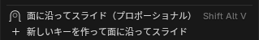
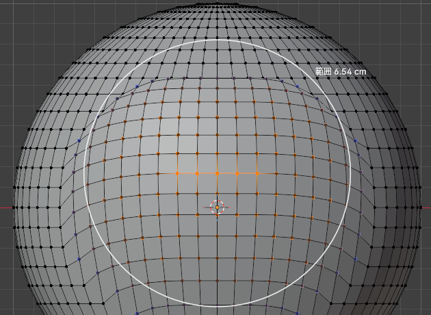
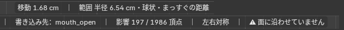
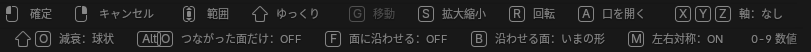
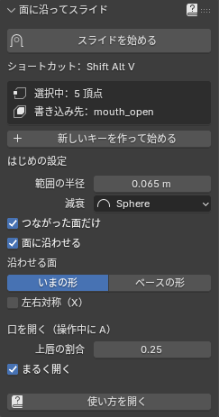
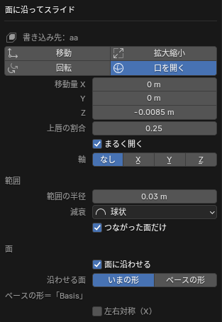
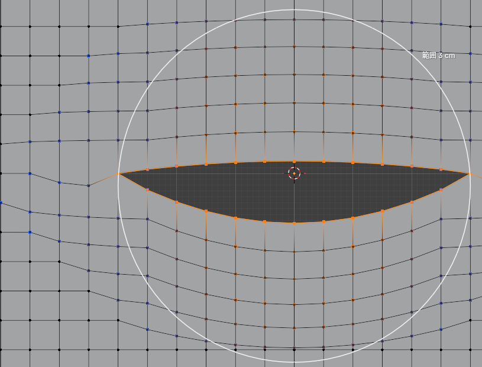

選んだ頂点を、顔の面から浮かせず・めり込ませずにすべらせる Blender のアドオンです。まわりの頂点も、プロポーショナル編集と同じように少しずつついてきます。口を開ける・口角を上げるといった表情のシェイプキー作り向けです。

右クリックメニュー（頂点を選ぶモード）のいちばん下。
ふつうの G（プロポーショナル編集つき）に近い感覚で使えます。ホイールで範囲、XYZ で軸、数字で数値入力。違うのは、動いた頂点が面の上に乗ったままになることと、F B M A がこの道具だけのキーなこと、R（回転）の軸がはじめは「面の向き」なことです。Ctrl を押しながらのスナップ、中ボタンで軸を決める操作は使えません。
動かした結果は、編集モードでいま選ばれているシェイプキー（一覧で青くなっているキー）に書き込まれます。シェイプキーが 1 つも無いメッシュでは、メッシュそのものを動かします。
次の 2 つのときは、動かす前に止まって、画面の下に理由が出ます。
| 止まるとき | なぜ | 直し方 |
|---|---|---|
| 書き込み先がベース（Basis）で、ほかにも表情キーがある | ベースを動かすと、ほかの表情キーも全部いっしょに変わってしまうため | シェイプキーの一覧で書き込みたいキーを選ぶ。新しく作るなら「新しいキーを作って始める」 |
| 書き込み先のキーがロックされている | 鍵をかけたキーを守るため | 一覧でそのキーの鍵のアイコンを外す |
シェイプキーがベース 1 つだけのときは止まらず、ベースそのもの（元の顔）を動かします。表情キーを作るときは、先に「新しいキーを作って始める」でキーを足してください。
操作中も、ヘッダーに「書き込み先：キーの名前」がずっと出ています。違うキーに書いていないか、ここで確かめられます。

操作中の 3D ビュー（球で試したところ）。この章の画像は、見本のために「面に沿わせる」と「つながった面だけ」を OFF、「左右対称」を ON にした状態です。はじめは「面に沿わせる」「つながった面だけ」とも ON で、「⚠ 面に沿わせていません」は出ません。

実際は 1 行です（ここでは 2 段に分けて載せています）。
| 出る文字 | 意味 |
|---|---|
| 移動 1.68 cm（Z・グローバル） | いまの動かし方と量。かっこの中は軸を決めたときだけ出ます。拡大縮小のときは「×1.250」のような倍率、回転のときは「回転 15.0°（面の向きのまわり）」のような角度と軸 |
| 範囲 半径 6.54 cm・スムーズ・つながった面だけ | 範囲の半径、減衰の曲線、距離の測り方（つながった面だけ／まっすぐの距離） |
| 書き込み先：キーの名前 | 結果を書き込むシェイプキー |
| 影響 197 / 1986 頂点 | 動く頂点の数 / 見えている頂点の数。思ったより多いときは範囲が広すぎます |
| 左右対称 | 反対側も鏡に写したように動いています |
| ⚠ 面に沿わせていません | F で面に沿わせるのを OFF にしています。ふつうのプロポーショナル移動と同じ動きです |
| 沿わせる面：ベースの形 | B でベースの形に沿わせています |
| ⚠ 左右の相手が見つからない頂点：○ 個 | 左右対称のとき、選んだ頂点のうち、反対側のちょうど鏡の位置に頂点が無いものの数。その頂点は片側だけ動きます |
| 上唇 12・下唇 12・口角 2（上唇は 0.25 倍） | 口を開く（A）のとき、上下にどう分けたか |

実際は 1 行です（ここでは 2 段に分けて載せています）。
押せるキーと、いまの状態（ON／OFF）が並びます。グレーになっている動かし方が、いまの動かし方です（上の画像なら「移動」）。軸を決めているときだけ「C 軸を解除」が出ます。「沿わせる面」はシェイプキーに書き込むときだけ出ます。
ステータスバーと同じ順に並べました。右の列が「Blender の G と同じ」ものは、ふだんの G と同じ動きです。「この道具だけ」のキーだけ覚えれば使えます。
| キー | すること | ふだんの Blender と |
|---|---|---|
| 左クリック・Enter・スペース | 確定 | Blender の G と同じ |
| 右クリック・Esc | キャンセル（元に戻す） | Blender の G と同じ |
| ホイール下・PageUp | 範囲を広く | Blender の G と同じ |
| ホイール上・PageDown | 範囲を狭く | Blender の G と同じ |
| Shift（押している間） | ゆっくり動く・範囲をゆっくり変える | Blender の G と同じ |
| G | 移動に切り替え | Blender の G と同じ |
| S | 拡大縮小に切り替え（選択の中心から） | Blender の S と同じ |
| R | 回転に切り替え（回転中にもう一度 R で、軸を 面の向き ⇄ 画面の奥向き） | Blender の R に近い |
| A | 口を開くに切り替え（下唇は下へ、上唇は少し上へ） | この道具だけ |
| X / Y / Z | その軸だけに動かす・回転ではその軸のまわりに回す（押すたびに グローバル → ローカル → 解除） | Blender の G と同じ |
| Shift + X / Y / Z | その軸を除いた 2 方向に動かす | Blender の G と同じ |
| C | 軸を解除 | Blender の G と同じ |
| Shift + O（O でも） | 減衰の曲線を順に切り替え | Blender の G と同じ |
| Alt + O | つながった面だけ ON/OFF | Blender の「接続のみ」と同じ |
| F | 面に沿わせる ON/OFF | この道具だけ |
| B | 沿わせる面：いまの形 ⇄ ベースの形 | この道具だけ |
| M | 左右対称 ON/OFF | この道具だけ |
| 0〜9 . - | 数値で入力（回転は度。= で単位や式も） | Blender の G と同じ |
| Alt + 中ボタン・Alt + ホイール | 操作を続けたまま視点を動かす | Blender の G と同じ |
操作中のキーで変えたこと（F・M・Alt+O・軸など）は、その 1 回だけです。次に始めると、N パネルの「はじめの設定」に戻ります（範囲の半径と減衰だけは、確定したときに残ります。右クリックや Esc でやめたときは残りません。7 章）。
前に別のモデルで使った半径がそのまま残っていると、顔に比べて大きすぎたり小さすぎたりします。始めたときに半径が次のどちらかなら、選んだ頂点に合った大きさ（選んだ範囲の半分か、まわりの辺の長さの 6 倍の、大きいほう）に直して始め、画面の下に「範囲の半径 ○ は大きすぎるので △ から始めます」と出ます。
この道具で最後に確定したときの半径か、N パネルの「範囲の半径」で決めた半径のままなら、大きくても小さくてもそのまま使います（わざと決めた大きさを勝手に変えないため）。
範囲のふちに向かって、ついてくる量がどう減るか。横が選んだ頂点からの距離（左が 0、右が範囲のふち）、縦がついてくる量です。迷ったら「スムーズ」。
Blender の減衰の「ランダム」は使えないので、選ばれていたときは「スムーズ」で動かします。確定すると、Blender のプロポーショナル編集の減衰も「スムーズ」に変わります。
ON のときは、メッシュの辺をたどった距離で範囲を決めます。上唇を動かしても、すぐ下にある下唇は、口の切れ目の向こう側（たどると遠い）なので動きません。OFF にすると、まっすぐの距離で決めます。Blender の「接続のみ」と同じ考え方です。
ON のときは、動いた頂点を面の上に乗せたまま、面に沿ってすべらせます。顔から浮いたりめり込んだりしません。OFF にすると、ふつうのプロポーショナル移動と同じです（ヘッダーに ⚠ が出ます）。「う」のように唇を前へ突き出すときは OFF にします。
F9 のパネルに、ベースの形として使っているキーの名前（ふつうは Basis）が出ます。
選んだ側の動きを、反対側（ローカルの X の符号が逆の側）にも鏡に写したように動かします。はじめは、メッシュの「X ミラー」（N パネルの「左右対称（X）」と同じもの）と同じ ON/OFF になります。真ん中の線の上の頂点は、左右にずれないように X を動かしません。
反対側の相手はベースの形で、ちょうど鏡の位置にある頂点を探して決めます。左右で形が違うメッシュでは見つからない頂点が出て、ヘッダーに ⚠ の数が出ます。数えるのは選んだ頂点だけなので、⚠ が出ていなくても、まわりのついてくる頂点の左右の形が違うと、動きはぴったり左右対称にはなりません。
選んだ頂点の真ん中を中心に、マウスを中心のまわりに回すと回ります（中心からマウスへ点線が出ます）。選んだ頂点は面に沿って回り、まわりの頂点は、ついてくる量に合わせて少しだけ回ります。眉・まぶた・口角の傾きを変えるのに向いています。
15 で 15°）。軸が手前を向いているとき、プラスは画面で左回りです。唇の切れ目のまわりの頂点を選んで A を押すと、選んだ頂点を「上唇」「下唇」「口角」に分けます。マウスを下へ動かすと、下唇がついてきて、上唇は少しだけ反対（上）へ動きます。口角は動きません。
上下の分け方は、始めたときの画面の上下で決まります。正面（テンキー 1）から見て始めてください。

N パネル（N）の「面スライド」タブ。編集モードのときだけ出ます。
| 設定 | どこに残るか |
|---|---|
| 範囲の半径・減衰 | Blender のプロポーショナル編集と共通。確定すると、そのときの値が残ります（操作中に変えた値、始めたときに自動で直された半径、ランダムの代わりのスムーズも）。ふつうの G のプロポーショナル編集にも使われます。やめたときと、F9 で変えたときは残りません |
| 左右対称（X） | メッシュの X ミラーの設定そのもの。操作中の M では変わりません |
| つながった面だけ・面に沿わせる・沿わせる面・上唇の割合・まるく開く | このシーンの「はじめの設定」として .blend に保存されます。操作中のキーで変えても、その 1 回だけ |
| 軸・動かし方（移動／拡大縮小／口を開く） | 残りません。毎回「移動・軸なし」から始まります |

確定したあと、左下の「面に沿ってスライド」を開くか F9。いちばん下の「左右対称（X）」がうすく見えることがありますが、押せます（画面の下のほうで F9 を押すと、パネルの高さが足りずに最後の行がうすく見えるだけです。マウスを画面の上のほうに置いて押すと直ります）。
確定したあとでも、左下のパネル（または F9）で、移動量・範囲の半径・減衰・左右対称などを変えると、動かす前の形からやり直して結果が変わります。マウスでは合わせにくい細かい量は、ここで数字を打つのが楽です。
F9 で変えた範囲の半径と減衰は、その 1 回の結果を変えるだけです。Blender の設定にも、次の操作にも残りません。
操作中に数字を打つと、その量で動きます。Enter で確定、Backspace で 1 文字消します（Ctrl + Backspace で全部消します）。ヘッダーに「⚠ 読めません」と出ている間は確定できないので、Backspace で直してください。
打った数字は「動かそうとする量」です。面に沿わせる（F）が ON のときは面の上をすべるので、実際に動く量は少し小さくなります（曲がった所ほど小さい）。ヘッダーの「移動 ○」と F9 の「移動量」も、打った量のほうです。ぴったりの量で動かしたいときは F で OFF にしてください。
0.005 → Enter：Z（上）へ 0.005 m（5 mm）。単位系がメートル法なら、数字だけのときはいつもメートルとして読みます（長さの単位を cm にしていても同じ）。単位系が「なし」のシーンでは Blender の単位で読みます-0.005 → Enter：下へ 5 mm0.008 → Enter：口を 8 mm 開く（下唇が 8 mm 下がる）1.2 → Enter：1.2 倍に広げる15 → Enter：15° 回す（-15 で逆向き）5mm のように打ちます（= を押さずに m を打つと、M の左右対称が切り替わります）。軸を決めずに数字を打つと、ふつうの G と同じく X の向きに動きます。
どれも、はじめに正面から見て（テンキー 1）、書き込み先のキーを選んでから始めます。顔が左右対称なら、メッシュの X ミラー（N パネルの「左右対称（X）」）を ON にしておくと、片側だけ選べば済みます。

練習用の板で口を開いたところ（A・まるく開く・範囲 3 cm）。
口角を外へ広げたいときは、そのあと口角の頂点だけを選び直して、Shift + Alt + V → X で横へ動かします（左右対称が OFF なら M で ON）。
12 Enter など）、あとからは F9 の「角度」で直せます。つり目・たれ目は、同じように上まぶたと下まぶたの縁（または目のまわり）を選んで回します。
| こうなる | わけ | 直し方 |
|---|---|---|
| メニューから選んでも動かない | カーソルが十字の間は、始める位置のクリック待ち | 動かし始めたい所をクリック |
| Shift+Alt+V が効かない | 編集モードでない・マウスが 3D ビューの外。Windows ではキーボードの切り替え（Alt+Shift）に取られることがある | 3D ビューの上で押す。だめならメニューか N パネルから始める。キーを変えるなら 12 章 |
| 「書き込み先がベース（Basis）なので止めました」 | ほかの表情キーがあるのに、一覧でベースが選ばれている（キーがベース 1 つだけのときは止めずに、ベースに書き込みます） | 書き込みたいキーを選ぶか、「新しいキーを作って始める」 |
| 「ロックされています」 | 書き込み先のキーに鍵がかかっている | 一覧で鍵を外す |
| 「動かしたい頂点を選んでから使ってください」 | 何も選ばれていない | 頂点を選ぶ（隠した頂点は数えません） |
| 顔ぜんぶが動く | 範囲が大きすぎる | ホイールを上へ。ヘッダーの「影響 ○ 頂点」を見ながら |
| 選んだ所しか動かない・段差ができる | 範囲が小さすぎる | ホイールを下へ |
| 上唇を動かしたら下唇も動いた | 「つながった面だけ」が OFF | Alt+O で ON。口角から回り込んで動くときは、動かしたくない側を H で隠してから始める |
| 唇が口の中へ入っていく | 横や下から見て始めた | 正面から見て始める（裏を向いた面には沿わせないので、正面から見ると口の中に入りません） |
| 左右がそろわない | 左右対称が OFF | M で ON。⚠ の数が出るときは、メッシュが左右でずれているので片側ずつ動かす |
| しわや線が出る | 範囲が狭い・減衰が急・一度に大きく動かしすぎ | 範囲を広げる、減衰を「スムーズ」にする、2 回に分けて動かす |
| 歯やまつげなどに吸い付く | 同じメッシュでつながっているパーツの面に沿ってしまう | そのパーツを H で隠してから始める（隠した面には沿わせません） |
| 面から浮く・めり込む（ふつうの移動になる） | 面に沿わせるが OFF（ヘッダーに ⚠） | F で ON |
| 「上下に分けられませんでした」（A） | 選んだ頂点が全部「口角（判断できない）」になった。口角しか選んでいない・切れ目の無い所（上にも下にも面がある頂点）を選んだ・正面から見ていない | 唇の切れ目にある上唇の縁と下唇の縁を両方選び、正面（テンキー 1）から見て始める |
| 口を開いたら、片側だけ動いた・上唇だけ逆に動いた（A） | 切れ目の片側（上唇か下唇の縁）だけを選んだ。このときはメッセージは出ずに、選んだ側だけが動きます | 両方の縁を選び直す。ヘッダーの「上唇 ○・下唇 ○」がどちらも 0 でないか確かめる |
| キーの値を 0.5 などにすると、途中で少し沈む | シェイプキーは始めと終わりをまっすぐ結ぶので、曲がった面の上を大きくすべらせると、途中は面の内側を通る | 気になるほど大きく動かすときは、途中の形のキーを分けて作る |
| 回転しても、ほとんど回らない・⚠ が出る（R） | X Y Z で決めた軸が、面に寝ている（面と平行に近い）。面に沿うと、その軸のまわりには回れない | C で軸を解除して「面の向き」で回す |
| 操作中に視点を変えたい | — | Alt + 中ボタンのドラッグ、Alt + ホイール |
| 「エラーが起きたので元に戻しました」 | 想定していない形で計算が止まった。形は元に戻っています | Windows ではウィンドウ（Window）→ Toggle System Console で中身を見ます。Linux・Mac では、Blender をターミナルから起動しておくと、そのターミナルに出ます。それを作った人に送ってください |
proportional_surface_slide-2.1.0.zip）を、Blender の画面にドラッグ＆ドロップします。新しい zip を同じように入れると置き換わります。入れたあと、Blender を一度閉じて開き直してください（開いたままだと古いほうが動いていることがあります）。
面に沿ってスライド を探します。Windows で、入力言語を Alt+Shift で切り替える設定にしていると、Shift+Alt+V が取られることがあります。そのときは上の手順で別のキーにしてください。N パネルの「ショートカット：」には、いま決まっているキーが出ます（キーマップで無効にしたときは「なし（キーマップで無効）」）。